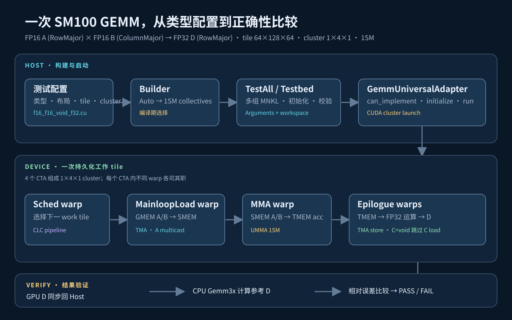
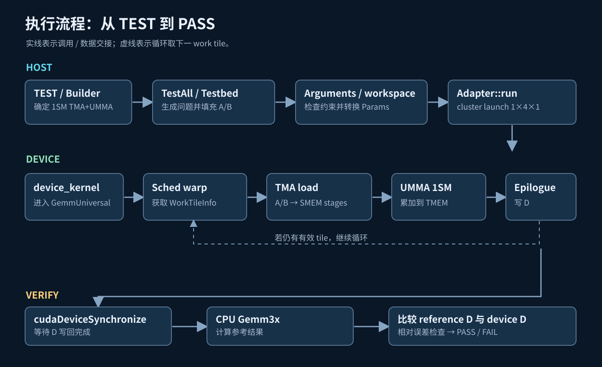
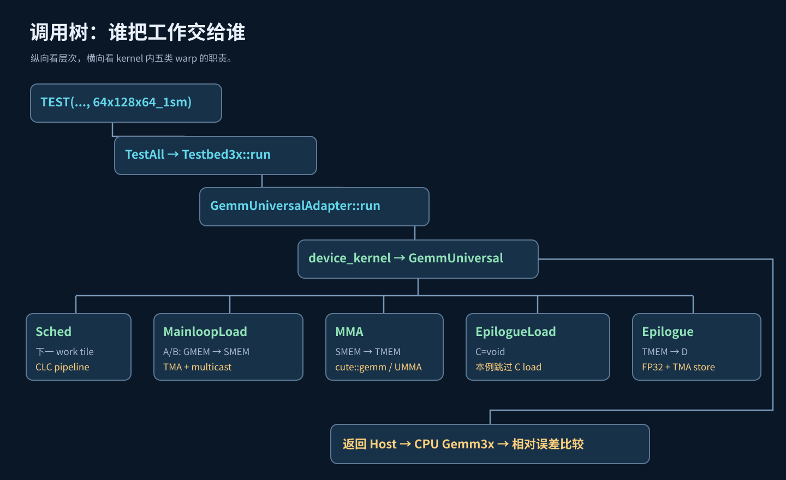

Builder
读取数据类型、布局、tile、cluster。两个 Auto 在编译期均选择 1SM 路径，形成 mainloop 和 epilogue collectives。
从 Host 端的模板配置与测试数据，到 1×4×1 cluster 中各类 warp 的并行协作，最后回到 CPU 参考结果校验。按“架构 → 流程 → 调用树 → 卡片”的顺序阅读。
先看三个大的执行区域：Host、Device、Verify

沿箭头阅读一次真实运行；虚线表示 persistent tile 循环

纵向定位 CUTLASS 层次，横向定位 kernel 内的 warp 角色

ElementC=void。保存调用树 SVG每张只回答“这一层负责什么”
读取数据类型、布局、tile、cluster。两个 Auto 在编译期均选择 1SM 路径，形成 mainloop 和 epilogue collectives。
组合多组 M/N/K、raster、swizzle 和 split；准备 A/B/D、Arguments 与 workspace，完成运行后的结果验证。
检查配置是否可运行，把 Arguments 转成 Params，按 1×4×1 cluster 启动 CUDA kernel。
负责 persistent tile 调度。cluster 中由首个 CTA 查询并发布新工作，其余角色消费同一份 tile 信息。
TMA 将 FP16 A/B 从 GMEM 送入 SMEM 的多级 buffer；沿 N 的 cluster 形状允许 A tile multicast。
等待 A/B stage 就绪，执行 1SM UMMA；FP32 累加结果位于 TMEM，并通过 accumulator pipeline 交给 epilogue。
读取 TMEM 累加值，执行 D=alpha×acc；结果经 SMEM stage 和 TMA store 写入全局 D。没有 C load。
GPU 完成后，在 Host 独立计算参考 D；把 device D 拷回并做相对误差比较，得出 PASS/FAIL。